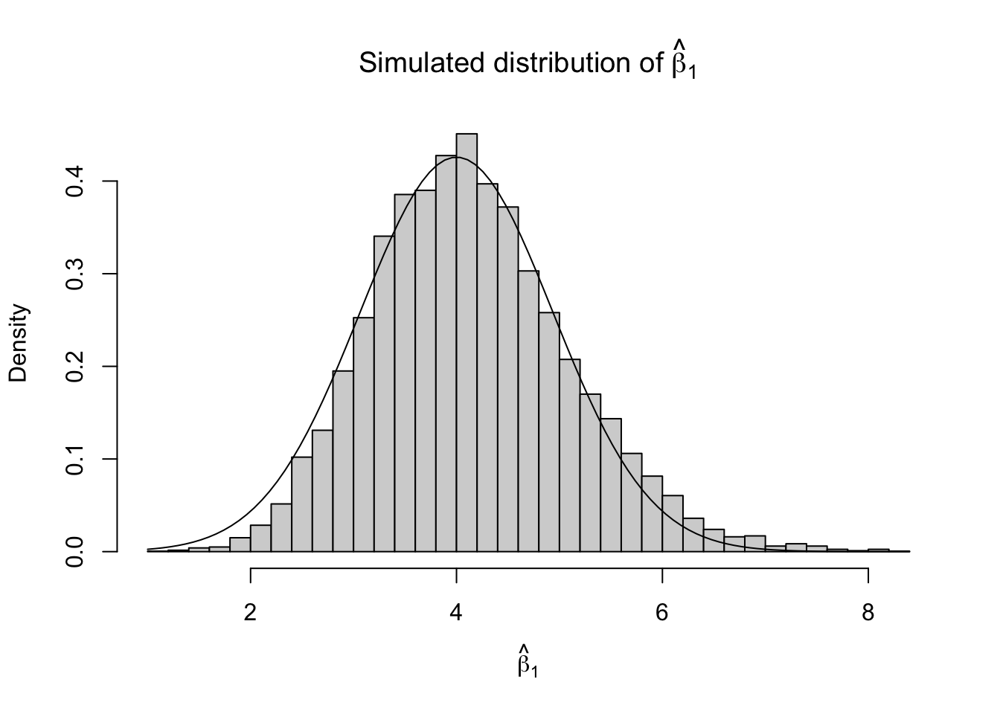
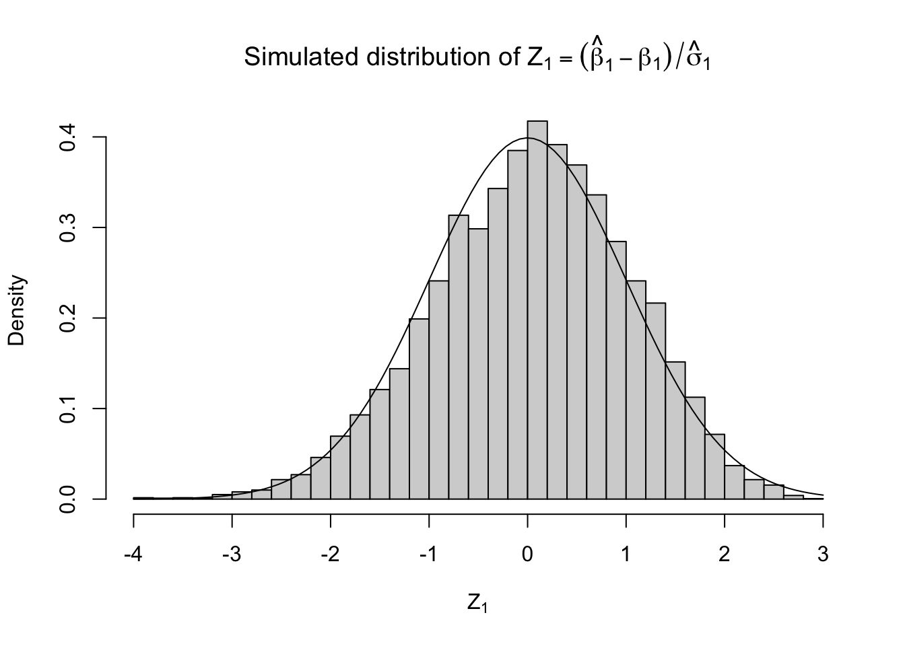

So far, everything we have seen in this class has dealt with the exact distributions of finite data sets. In many cases we have needed to exploit special properties of the model \(\cP\) (e.g., that it has a complete sufficient statistic, it is an exponential family, it is a multivariate Gaussian distribution, etc.) to make exact calculations easier. In generic models, however, the tools we have learned so far may fail us.
For generic models, exact calculations may be intractable or impossible. However, we may be able to approximate our problem with a simpler problem in which calculations are easy. Typically, we approximate by Gaussian by taking the limit as observations \(n \to \infty\). This is only interesting if the approximation is good for reasonable sample sizes, but fortunately it very often is.
1.1 Example: Logistic regression
To take a specific example, suppose that we modify the linear regression example from the last lecture to allow for a binary rather than a continuous response. We retain the feature vector \(x_i \in \RR^d\) and regression coefficients \(\beta \in \RR^d\), but instead of observing outcome \(y_i \simind N(\beta'x_i, \sigma^2)\), we now observe \(y_i \simind \text{Bern}(\mu(\beta'x_i))\), where
\[
\mu(\eta) = \frac{e^{\eta}}{1+e^{\eta}}.
\] Define the mean response\(\mu_i = \mu(\beta'x_i)\) and linear predictor\(\eta_i = \log \frac{\mu_i}{1-\mu_i} = \beta'x_i\).
Unlike the linear regression model, we cannot simply rotate the response vector into a canonical basis without destroying the structure of our model; the entries of the rotated response vector would be neither Bernoulli nor independent.
We might still hope to make progress by observing that we have an exponential family model, since \[
\begin{aligned}
p_\beta(y \mid X) &= \prod_{i=1}^n \mu_i^{y_i}(1-\mu_i)^{1-y_i}\\
&= \prod_{i=1}^n \exp\left\{\beta'x_i y_i + \log(1-\mu(\beta'x_i))\right\}\\
&= \exp\left\{\beta'X'y - A(\beta;X)\right\},
\end{aligned}
\] a \(d\)-parameter exponential family on \(\mathcal{Y} = \{0,1\}^n\) with natural parameter \(\beta\), complete sufficient statistic \(X'y\), and normalizing constant \(A(\beta; X) = - \sum_i \log (1+e^{\beta'x_i})\). Note \(A\) depends only on \(\beta\) and the design matrix \(X\), which we typically treat as fixed (possibly after conditioning on it, if it is “really” random).
If we want to estimate \(\beta\), we might hope for a UMVU estimator. Unfortunately, no unbiased estimator could possibly exist: any estimator \(\hat\beta_j\) would have some largest value that it can take on the finite sample space \(\mathcal{Y}\), and its expectation can never be larger than that value, even though \(\beta_j\) can range over the entire real line. We could also come up with a Bayes estimator, but we would have to specify a joint distribution over the parameter vector \(\beta \in \RR^d\), which we might not wish to do.
Likewise, we might want to test a hypothesis like \(H_0:\;\beta_j = 0\) vs \(H_1:\;\beta_j \neq 0\). Again, we might think we are in good shape due to the exponential family form: all we have to do is condition on \(X_{-j}'y\) and then reject for conditionally large values of \(X_j'y\). Unfortunately, however, this is also typically a nonstarter: if one of the features \(X_k\) takes continuous values, then the entire vector \(y\) can be recovered from observing only \(X_k'y = \sum_{i:y_i=1} x_{i,k}\) if all \(2^n\) such partial sums are distinct. In that case, the only unbiased test is the trivial constant test that ignores the response vector \(y\) and rejects with probability \(\alpha\).
Fortunately, if \(n\) is “large” then we can apply general-purpose asymptotic methods to come up with very good estimators, tests, or confidence intervals in this problem. Define the maximum likelihood estimator\[
\begin{aligned}
\hat\beta_{\text{MLE}} &= \argmax_{\beta \in \RR^d} p_\beta(y \mid X)\\
&= \argmax_{\beta \in \RR^d} \beta'X'y - A(\beta; X),
\end{aligned}
\] which can be maximized efficiently because the log-likelihood is concave in \(\beta\).
We’ll show in a future lecture that, under relatively mild conditions, we will have \[
\hat\beta_{\text{MLE}} \approx N_d(\beta, J(\beta)^{-1}),
\] for the Fisher information matrix \[
J(\beta) = \Var_{\beta}(\nabla\ell(\beta; y, X))
= -\EE_\beta \nabla^2\ell(\beta; y, X)
\] That is, if \(n\) is large then \(\hat\beta_{\text{MLE}}\) approximately follows a Gaussian distribution that is not only approximately unbiased, but its variance-covariance matrix \(\Sigma(\beta) = J(\beta)^{-1}\) matches the Cramèr–Rao lower bound.
What is more, the observed value of minus the Hessian matrix gives a good approximation to its expectation, the Fisher information matrix at the true \(\beta\): \[
\widehat{\Sigma}(y,X) = (-\nabla^2\ell(\hat\beta_{\text{MLE}}; y, X))^{-1} \approx \Sigma(\beta) = J(\beta)^{-1}
\] For a single coefficient \(\beta_j\) we can say \(\hat\beta_j - \beta_j \approx N(0, \sigma^2_{j}(\beta))\), for \(\sigma^2_j(\beta) = \Sigma_{jj}(\beta))\), or \[
Z_j = \frac{\hat\beta_j - \beta_j}{\hat\sigma_j} \approx N(0,1), \quad \text{ for } \hat\sigma^2_j = \widehat\Sigma_{jj},
\] leading to natural tests for hypotheses like \(H_0:\;\beta_j = 0\) or the confidence interval \(\hat\beta_j \pm z_{\alpha/2} \sqrt{\hat\Sigma_{jj}}\) for \(\beta_j\).
These results do not necessarily require \(n\) to be huge; for example, we can simulate the distribution of \(\hat\beta_1\) in the logistic regression model \(\eta_i = \beta_0 + \beta_1 x_i\) with an intercept and a single (uniformly distributed) covariate. For \(\beta_0 = -2\), \(\beta_1 = 4\), and \(n = 100\), the normal approximation appears reasonably good, though it depends on the parameters.
set.seed(12345)n <-100beta <-c(-2,4)B <-1E4beta.hat <-matrix(NA, nrow=B, ncol=2)sigma.hat <-matrix(NA, nrow=B, ncol=2)for (b in1:B) { x <-runif(n) eta <- beta[1] + x * beta[2] mu <-exp(eta) / (1+exp(eta)) y <-1*(runif(n) < mu) mod <-glm(y ~ x, family=binomial)## Estimate is MLE beta.hat[b,] <-coef(mod)## Std. error estimate is sqrt(-diag(Hessian) at MLE) sigma.hat[b,] <-coef(summary(mod))[,"Std. Error"]}## "True" Fisher informationsigma <-sqrt(colMeans(sigma.hat^2))hist(beta.hat[,2], freq=FALSE, breaks=50, main =expression(paste("Simulated distribution of ", hat(beta)[1])), xlab=expression(hat(beta)[1]))curve(dnorm(x, mean = beta[2], sd = sigma[2]), add=TRUE)

hist((beta.hat[,2] - beta[2])/sigma.hat[,2], freq=FALSE, breaks=30, main =expression(paste("Simulated distribution of ", Z[1] == (hat(beta)[1]-beta[1])/hat(sigma)[1])), xlab=expression(Z[1]))curve(dnorm(x), add=TRUE)

These results about the MLE apply far beyond logistic regression, to a wide variety of other models. To begin to prove them, however, we will need to be more precise about what we mean by \(\hat\beta\) approximately following a normal distribution, or by the estimator \(\hat\Sigma\) being approximately equal to the estimand \(\Sigma(\beta)\).
2 Convergence
There are two main approximations we will be interested in making: approximating a random variable as a limiting constant, and approximating it as having some limiting distribution, usually a multivariate Gaussian distribution. To make these approximations precise, we need to introduce two types of convergence: convergence in probability, and convergence in distribution.
Let \(X_1, X_2, \ldots\) be a sequence of random variables on a sample space \(\cX\), which we assume is endowed with a distance \(d(x,y)\). Because we are primarily interested in \(\cX \subseteq \RR^d\), we will write \(d(x,y)\) as \(\|x-y\|\), and it will not matter which norm we choose, but
We say the sequence converges in probability to a limiting constant \(c \in \cX\), written as \(X \toProb c\) if \[
\mathbb{P}(\|X_n - c\| > \epsilon) \to 0 \quad \forall \epsilon > 0.
\] In writing the norm we are implicitly assuming $
2.1 Convergence in Probability
We say the sequence converges in probability to \(c \in \mathbb{R}^d\) (\(X_n \xrightarrow{p} c\)) if:
In a sequence of statistical models \(\cP_n = \{P_{n,\theta}: \theta \in \Theta\}\) with \(X_n \sim P_{n,\theta}\), we say \(\hat{\theta}_n\) is consistent for \(g(\theta)\) if \(\hat{\theta}_n \xrightarrow{p} g(\theta)\), meaning:
Usually, we omit the index \(n\); sequence is implicit.
2.5 Law of Large Numbers (LLN)
Let \(\bar{X}_n = \frac{1}{n} \sum_{i=1}^n X_i\)
If \(\mathbb{E}|X_i| < \infty\), \(\mathbb{E}X_i = \mu\), then \(\bar{X}_n \xrightarrow{p} \mu\)
2.6 Central Limit Theorem (CLT)
If \(\text{Var}(X_i) = \sigma^2 < \infty\), then \(\sqrt{n}(\bar{X}_n - \mu) \xrightarrow{d} N(0, \sigma^2)\)
There are stronger versions of both the LLN and CLT, but this will generally be enough for us.
3 Continuous Mapping Theorem
Theorem (Continuous Mapping): Let \(g\) be continuous, \(X_n, X\) r.v.’s.
If \(X_n \xrightarrow{d} X\), then \(g(X_n) \xrightarrow{d} g(X)\)
If \(X_n \xrightarrow{p} c\), then \(g(X_n) \xrightarrow{p} g(c)\)
Proof: \(f\) bounded continuous \(\implies f \circ g\) bounded continuous If \(X_n \xrightarrow{d} X\), then \(\mathbb{E}[f(g(X_n))] \to \mathbb{E}[f(g(X))]\)\(X_n \xrightarrow{p} c\) special case with \(X \equiv c\)